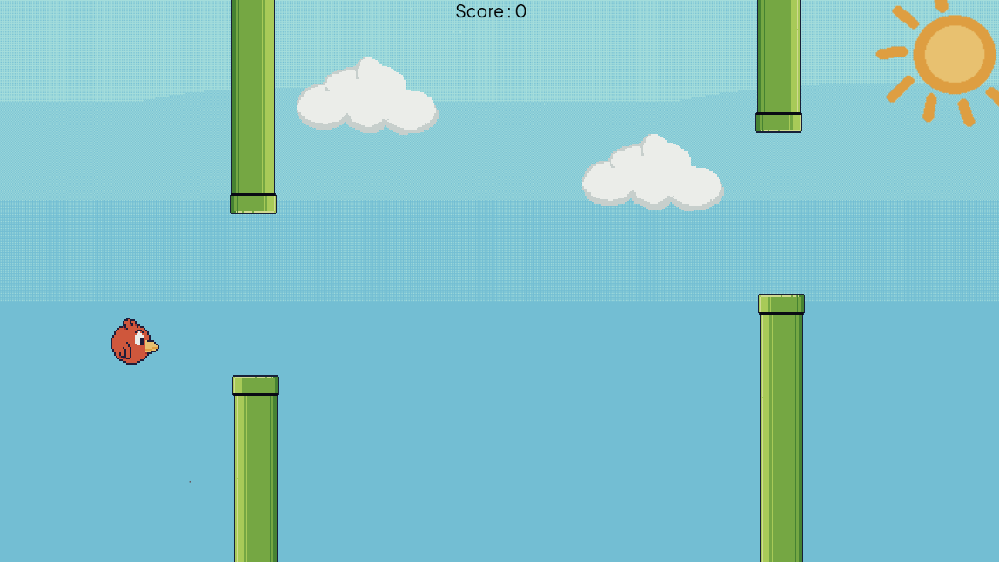

Genetic Algorithm on Flappy Birds
4 March 2024
Access the project on:
GithubIntroduction
I suddenly had the urge to learn AI, after all, it was the currently hottest technology trend. It happened when an interesting youtube video popped up on my recommendations, a series of lectures from Stanford's CS 221 class, which broadly is about the introduction to artificial intelligence. It also comes with several problems, some math and some programming in python which is pretty useful to concretize the concepts taught.
Anyways, after watching several videos, I became interested in making a flappy bird clone that can teach itself to play the game, mostly inspired by an early video by CodeBullet, a youtuber whose contents are mostly about creating an AI that can play a specific game.
I plan to code the whole thing in godot, a free, opensource, and extremely lightweight game engine. I like it since it takes way less time to setup than unity, and takes way less storage space. It may not be the best and most performant, but it works for me 😊, although, using python may be better.
Before starting the project, I had several things in my mind:
- Each bird will decide to jump or not based on an array of weights. These 'weights' can be thought of as their genetic code and we will attempt to optimize it using the genetic algorithm.
- At first, we will simply multiply the weights with the horizontal and vertical distance from the bird to the hole of the pipe. Perhaps later, more information would be given to the birds.
- I should code the genetic algorithm to run as seperately as possible with the game itself , enabling easier reuse with other projects.
Just to quickly summarize how the genetic algorithm works, we first randomly initialize the first generation. Then we will test each of the individuals to get a score (or in evolutionary algorithm language: fitness value). We will then randomly select individuals, with higher priority to higher scoring ones, to breed and generate the individuals for the next generation. We can then add some mutations to further add variation. This process roughly simulates biological evolution and natural selection.
First of all, for the game, you could find godot tutorials on the web. Many of them will teach how to code flappy bird since it is a simple yet popular game. This is what my game looks like.
Modifying The Birds
Now, I will adapt the player/bird so it doesn't jump on input, instead it will calculate if it will jump based on the weights, which will be a list of floats.
class_name Bird
extends RigidBody2D
@export var jumpPower := -200
var score := 0 : set = _set_score
func _set_score(newScore: int):
score = newScore
UiEvents.scoreChanged.emit(newScore)
signal died(score: int)
func _ready() -> void:
freeze = true
func _physics_process(_delta: float) -> void:
if (Input.is_action_just_pressed("jump")):
linear_velocity.y = jumpPower
func die():
died.emit(score)
queue_free()
func _on_body_entered(body: Node) -> void:
if body is Pipes:
die()class_name Bird
extends RigidBody2D
signal died(score: int, weights: Array[float])
@export var jumpPower := -200
var score := 0 : set = _set_score
var weights = [0, 0]
func _ready() -> void:
Events.start_generation.connect(func():
set_deferred("freeze", false))
set_deferred("freeze", true)
func _set_score(newScore: int):
score = newScore
UiEvents.scoreChanged.emit(newScore)
func _physics_process(_delta: float) -> void:
if (should_jump()):
linear_velocity.y = jumpPower
# Predictor Function
func should_jump() -> bool:
var value := signf(
weights[0] * (Data.nextPipePosition.x - global_position.x) +
weights[1] * (Data.nextPipePosition.y - global_position.y)
)
if (value == 1): return true
else: return false
func die():
died.emit(score, weights)
queue_free()
func _on_body_entered(body: Node) -> void:
if body is Pipes:
die()In the "should_jump" function, I use a simple linear classifier for the decision making.
In order for the birds to calculate their decisions, they first need data regarding the position of the next pipe, which I plan to provide through the autoloaded (singleton) script "Data". When the pipes are spawned, they will queue themselves in the "Data" class, which then will be accessed by the birds. We set the birds x position to be about x=100, so we will pop the front of the queue once the first pipe's x position is under 100. While the game may make it seem that the bird is moving forwards, what is actually happening is that the bird stays in the same x position, while pipes and other decoration move to the left, giving the illusion of the bird moving forward.
extends Node2D
var pipeQueue : Array[Pipe] = []
var nextPipePosition := Vector2(1200, 300)
func _physics_process(delta: float) -> void:
if (pipeQueue.size() > 0):
if (pipeQueue[0].global_position.x < 100):
pipeQueue.pop_front()
nextPipePosition = pipeQueue[0].global_position
func queuePipe(pipe: Pipe):
pipeQueue.push_back(pipe)func _spawn_pipe() -> void:
var pipe = pipes.instantiate()
add_child(pipe)
Data.queuePipe(pipe)
pipe.speed = pipeSpeed
pipe.position.y += randf_range(-200, 200)Generating The Population
Now that that's done, we will work on the Trainer class, which will do several things:
- Initialize the weights randomly with floats between -10 to 10
- Spawn several birds as children and give them random weights. When they die, collect the data.
- Select the best of the birds and "breed" them by mixing their weights
- Introduce "genetic mutations" by adding random values to the weights
- Redo the cycle
class_name Trainer
extends Node2D
signal generation_ended
signal next_generation_ready
@onready var bird := preload("res://Player/Bird.tscn")
# Length of the each weight in the weights array
var length := 2
# Amount of birds to spawn
var generation_size := 500
var weights := []
class Result:
var score: int
var weights: Array[float]
func _init(_score: int, _weights: Array[float]):
score = _score
weights = _weights
var results : Array[Result] = []So before all of that, here are some variables of the Trainer class
- The signals will be used to tell the parent when the training has ended (generation_ended) and when the trainer is ready for the next round (next_generation_ready).
- 'length" indicates the length of the weights vector/array. The value should be set according to the weights used by the Bird class
- "generation_size" indicates the amount of birds the trainer will spawn every generation
- "weights" is a 2D array containing individual weights (The genetic code) of each bird, each with the length of the "length" variable
- The "results" will contain the score and weights of every individual bird.
func initialize_weights() -> void:
for i in range(generation_size):
var weight : Array[float] = []
for j in range(length):
weight.push_back(rand_range(-10, 10))
weights.push_back(weight)func prepare_next_generation() -> void:
# Reset the results
results = []
# Spawn the generation
for weight in weights:
var child : Bird = bird.instantiate()
child.weights = weight
child.died.connect(record_bird)
add_child.call_deferred(child)
next_generation_ready.emit()
When running the code, the error message told me to use "call_deferred" on "add_child" instead of calling "add_child" directly.
I wasn't too sure what it does, so I looked it up. Based on the documentation, "call_deferred" will execute the function during idle time in the same frame, after the engine calculates process and physics process frames (similar to Update() and FixedUpdate() in Unity).
So, perhaps the reason it produced an error message may have been related to the many entities being spawned, therefore the error message said to move the calls into the idle time to not cause any weird physics bugs or something.
Since a lot of new child nodes are created every generation, perhaps the code can be optimized by using object pooling, which I may or may not do. Anyways, for me, doing too much optimization will make it hard to actually finish the project. If we require extra performance in the future, we will handle it in the future.
Testing The Population
The "prepare_next_generation" function should be called by the parent of the trainer node. When it has prepared the next generation, it will emit the "next_generation_ready" signal to tell the parent that it is ready to run. In my case, the parent will be Main.gd.
@onready var trainer := $Trainer
func _on_trainer_next_generation_ready() -> void:
Events.start_generation.emit()
UiEvents.next_generation.emit()
pipeSpawner.start()
func _on_trainer_generation_ended() -> void:
Events.end_generation.emit()
pipeSpawner.end()
trainer.prepare_next_generation()func _ready() -> void:
Events.start_generation.connect(func():
set_deferred("freeze", false))
set_deferred("freeze", true)The "Main" node will be the one controlling the whole game. The "next_generation_ready" signal connects to a function in Main.gd, which will call another signal on the autoloaded "Events" script (singleton) and start spawning the pipes.
I made the birds so that it will freeze (their physics won't run) until the "Events.start_generation" signal is called. This ensures everyone starts at the same moment.
We could make the "Trainer" class emit the "Events.start_generation" signal directly, but I like this because it really seperates the "Trainer" from the other segments of the game. The "Trainer" only needs to concern itself on the training part and the game will be handled seperately.
A simpler way to do this may have been to just call "set_deferred("freeze", false)" on all children of the "Trainer". I may have overthought it when writing this code, but I originally wanted to have several "Trainer"s and doing this will enable me to synchonize every "Trainer" to start the same time.
Gathering The Results
The birds will attempt to survive with the weights (genetic code) given to them by the "Trainer" and when they die, they will send the score (amount of pipes they passed) and their weights (genetic code). It does this by emitting the "died" signal. The "Trainer" will capture the signal and push it into the "results" array.
func _on_body_entered(body: Node) -> void:
if body is Pipe:
died.emit(score, weights)
queue_free()func prepare_next_generation() -> void:
# Reset the results
results = []
# Spawn the generation
for weight in weights:
var child : Bird = bird.instantiate()
child.weights = weight
child.died.connect(record_bird)
add_child.call_deferred(child)
next_generation_ready.emit()func record_bird(score: int, weights: Array):
var result := Result.new(score, weights)
results.push_back(result)
if results.size() >= generation_size:
calculate_next_generation_weights()One benefit of this is that the array will always be sorted, because the higher the score, the later they will die and the later they will be pushed into the array. After all the birds have died, the "Trainer" will commence the genetic algorithm.
The Genetic Algorithm
This is where the machine can "learn" by simulating natural selection. Here, we are going to build a basic genetic algorithm. This is the general code to do that.
func calculate_next_generation_weights():
# Elitism. Keeps the top 2% best achiever.
# Keeps at least 1 of the best.
for i in range(1, generation_size/50 + 2):
weights.push_back(results[-i].weights)
while weights.size() < generation_size:
# Selection and breeding
var children = breed(select(), select())
# Mutation algorithm
for child in children:
mutate(child)
weights.push_back(child)
# Clear any excess weights
while weights.size() > generation_size: weights.pop_back()
generation_ended.emit()
First of all, I introduce "elitism". It refers to the practice of keeping some of the best performing
individuals to prevent the next generation from becoming worse.
Then, I will refill the population by looping over the process of selection, crossover (breeding), and mutation.
Selection
# Tournament selection
func select() -> Array[float]:
var tournament_size : int = generation_size * 0.05
const selection_p = .8
var parent : Result
for i in range(tournament_size):
var potential_parent = results[randi_range(0, results.size()-1)]
if (not parent or (potential_parent.score > parent.score and randf() < selection_p)):
parent = potential_parent
return parent.weightsThis method of selection is called Tournament Selection. The selection algorithm works by choosing 'tournament_size' amounts of parents and then doing a 'tournament' between them. The one with the highest score will win the tournament. To make the algorithm less deterministic and add randomness, we add a 'selection_p' variable, which is the probability that the higher score will be chosen. With this, we give a chance for the less fit to be chosen.
'tournament_size' and 'selection_p' are parameters that can and should be adapted based on individual cases. Most of these parameters are adjusted to balance between exploration and exploitation, to maintain a diverse population while also keeping the best individuals.
Originally, when I first wrote the selection function, I made what's called as a Roulette Selection.
The selection method can be imagined as spinning a roulette wheel where the area of the slice is proportional to the score achieved.
After some googling, I found out that Tournament Selection is more often used and considered better, so I changed it.
This is also somewhat better than my implementation of the Roulette Selection as its time complexity was O(generation_size) each time
it selects a parent, compared to the current Tournament Selection that runs on O(tournament_size). Wikipedia says that O(log n) or O(1) should be possible for Roulette Selection, it was just my original implementation that was bad.
Crossover
#Single point crossover
func breed(parentA: Array[float], parentB: Array[float]) -> Array:
var childA = []
var childB = []
var length = min(parentA.size(), parentB.size())
var index = randi_range(1, length-1)
for i in range(length):
childA.push_back(parentA[i] if (i < index) else parentB[i])
childB.push_back(parentB[i] if (i < index) else parentA[i])
return [childA, childB]Similar to the selection function, I started out with a quite unsuitable crossover method for our purposes. In Single Point Cross Over, 2 parents will generate 2 offsprings where in one offspring, the first several weights will be inherited from parent A, and the rest from parent B. The other offspring will have the opposite.
This works on binary arrays, whose values are only 1s and 0s, but not so much on real values. Doing this on floats will restrict the exploration space to only a few points.
Instead, we should use intermediate recombination.
# Intermediate recombination
func breed(parentA: Array[float], parentB: Array[float], child_count = 2) -> Array:
var children = []
var length = min(parentA.size(), parentB.size())
var index = randi_range(1, length-1)
# Generate 'child_count' amount of children
for k in range(child_count):
var child = []
# Generate the individual weights of the child
for i in range(length):
var scaling_factor = randf_range(-0.25, 1.25)
var new_gene = parentA[i]*scaling_factor + parentB[i]*(1-scaling_factor)
child.push_back(new_gene)
children.push_back(child)
return childrenThis method determines the child values by doing a linear interpolation from the parent's values and thus, the child has way more potential values compared to only copying either from parentA or parentB.
Mutation
For the last piece of code to mimic natural reproduction, we need to introduce some randomness or mutation. In this case, I just use a simple uniform mutation.
# Mutation algorithm, modifies the weights in place
func mutate(weights: Array) -> void:
var mutation_chance := 1/length
const mutation_limit := 0.1
for i in range(length):
if randf() > mutation_chance:
weights[i] += randf_range(-mutation_limit, mutation_limit)For every value in the weights, there is a 'mutation_chance' chance to change the value between 'mutation limit'.
The constants in this function can be tweaked to encourage or discourage mutation. We can also edit the function so that it mutates less the longer the algorithm runs for. However, for now, this should be enough.
Unlike the previous functions, this one doesn't need to return any values since no new weights are created, instead it directly changes the values of the weights in place.
The End Result
Great! It seems to work. 👍
Although, after looking at it and running it multiple times, I find the bird's behaviour to be weird. It always jumps before encountering the pipe hole, which makes sense, but when it is between the pipes, it always seems to jump again, nearly hitting the top pipe. Why would the bird always jump while being in the middle of the pipe?
It turns out, this is because of how the bird's decision making.
# Predictor function
func should_jump() -> bool:
var value := signf(
weights[0] * (Data.nextPipePosition.x - global_position.x) +
weights[1] * (Data.nextPipePosition.y - global_position.y)
)
if (value == 1): return true
else: return falseIt only looks at the x and y distance to the next pipe and multiplies it by the weights. We can visualize this decision making as such.

The decision line's equation is y = -weights[0]/weights[1] * x, and the line always has to pass through the middle of the pipes because that is the origin.
The linear equation is missing a constant value that enables it to not have to always pass the origin.
So what the genetic algorithm has been trying to do is to spin the line around the point between the pipes to see which would result in the best scores.
Also, because the line always has to pass through the middle of the pipes, the birds in the previous video always tries to jump while being in the middle of the pipes.
Looking again at this, it seems like having 2 seperate values might be redundant since they are divided to determine the slope. Instead, we can use one of the weights to act as the line intercept.
# Predictor function
func should_jump() -> bool:
var value := signf(
weights[0] * (Data.nextPipePosition.x - global_position.x) -
(Data.nextPipePosition.y - global_position.y) +
weights[1]
)We should also alter the initialization phase of the weights. Currently, we set each weight to be a random value between -10 and 10. However, I think that the optimal slope should be around perhaps -3 to 3, furthermore, the intercept should be allowed to contain higher values as it represents the offsets in positions in pixels. Therefore, I want the intercept to start with random values between -300 to 300.
# Range of initialization for each weight
var initialization_range := [3, 300]
var default_initialization_range := 100func initialize_weights() -> void:
for i in range(generation_size):
var weight : Array[float] = []
for j in range(length):
var weight_range = (initialization_range[j]
if j < initialization_range.size()
else default_initialization_range)
weight.push_back(randf_range(-weight_range, weight_range))
weights.push_back(weight)We could also edit the mutation chance to be a percentage of the original initialization range.
func mutate(weights: Array) -> void:
var mutation_chance := 1/length
const mutation_limit := 0.1
for i in range(length):
if randf() > mutation_chance:
var mutation_range : float = (initialization_range[i]
if i < initialization_range.size()
else default_initialization_range) * mutation_limit
weights[i] += randf_range(-mutation_range, mutation_range)Now, our mutation chance will be based on the length of the weights, so on average, only one value in the weight vector should be mutated. The 'mutation_limit' is now the percentage number of the 'initialization_range' that will be the range of mutation.
Let us see how the game runs now, after these changes.
Now, the bird's movements should look better compared to the last.
However, we can still vaguely observe the decision line of the birds.
That should tell you that the machine learning algorithm here is very very very basic
Most of the best birds are due to better decision lines and a lot of luck, since if the bird lands on the decision line too late, they will hit the pipe regardless.
We can increase the complexity of the model by increasing the amount of features, for example the linear velocity of the bird.
I have added more features and a basic customization screen on the game, which you can try on itch.io.
Anyways, this would be the end of this post.
Thanks for reading till the end. 👍